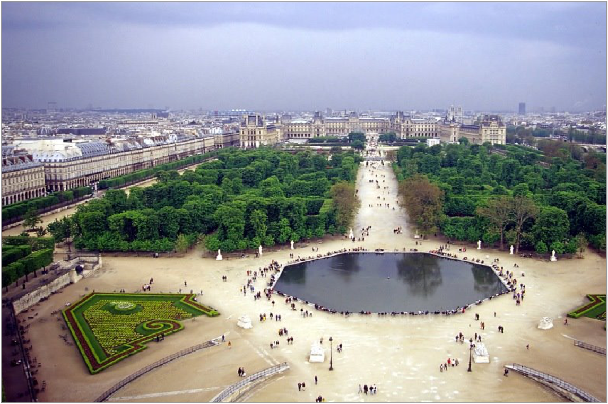

After the accidental death of Henry II of France in 1559, his widow Catherine de' Medici (1519–1589) planned a new palace. She sold the medieval Hôtel des Tournelles, where her husband had died, and began building the palace of Tuileries in 1564, using architect Philibert de l'Orme. The name derives from the (...) tile kilns or tuileries which had previously occupied the site. The palace was formed by a range of long, narrow buildings. During the reign of Henry IV (1589–1610), the building was enlarged to the south, so it joined the long riverside gallery, the Grande Galerie, which ran all the way to the older Louvre Palace in the east.
The Tuileries: Overview
